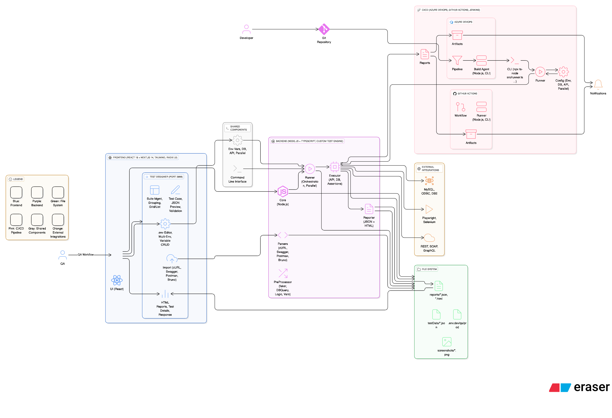

📐 Overview
TestFlow Pro is built with a modular, scalable architecture that separates concerns between test authoring, execution, and reporting. The framework follows a layered architecture pattern with clear separation of responsibilities.
Key Architectural Principles
- Separation of Concerns: Clear boundaries between UI, API, execution, and utilities
- Modularity: Each component can be extended or replaced independently
- Scalability: Parallel execution and efficient resource management
- Extensibility: Plugin architecture for custom functions and parsers
- Testability: Each layer can be tested independently
🎯 Architecture Diagram
The following diagram illustrates the high-level architecture and component interactions:

📚 Architecture Layers
TestFlow Pro consists of six main architectural layers:
Frontend Layer
React-based UI for visual test management and authoring
API Layer
RESTful endpoints for frontend-backend communication
Execution Engine
Core test execution orchestration and management
Core Services
Variable store, assertions, preprocessing, validation
Utilities
Parsers, loggers, reporters, environment management
Data Layer
Test suites, reports, configurations, databases
🎨 Frontend Layer
The user interface layer provides visual tools for test management built with modern web technologies.
Technology Stack
Components
| Component | Description |
|---|---|
| Dashboard | Browse and manage test suites with grid/list views |
| Test Suite Editor | Create and edit test cases visually |
| Import Tools | Convert cURL, Swagger, Postman, Bruno to TestFlow format |
| Results Viewer | Analyze test execution results with detailed insights |
| Environment Manager | Edit .env files and manage configurations |

🔌 API Layer
RESTful API endpoints facilitate communication between the frontend and backend systems.
Key Endpoints
POST /api/suites // Create test suite GET /api/suites // List all suites GET /api/suites/:id // Get specific suite PUT /api/suites/:id // Update suite DELETE /api/suites/:id // Delete suite POST /api/run // Execute tests GET /api/results // Get test results POST /api/import/curl // Import from cURL POST /api/import/swagger // Import from Swagger POST /api/import/postman // Import from Postman POST /api/import/bruno // Import from Bruno
⚙️ Execution Engine
The execution engine is the heart of TestFlow Pro, orchestrating test execution and managing the test lifecycle.
Test Runner
src/runner/TestRunner.ts
- Orchestrates test execution
- Manages parallel execution
- Handles test filtering
- Controls execution flow
Test Executor
src/executor.ts
- Executes individual test cases
- Manages test data iterations
- Routes API/UI tests
- Processes assertions
UI Test Runner
src/ui-test.ts
- Playwright integration
- Browser automation
- Element interactions
- Screenshot capture
API Test Runner
Within executor.ts
- HTTP request execution
- SOAP request handling
- Response validation
- Schema validation
🔧 Core Services
Core services provide essential functionality used across the framework.
Variable Store
src/utils/variableStore.ts
// Global variables (persist across test cases)
setVariable(key, value)
getVariable(key)
// Local variables (cleared after each test case)
setLocalVariable(key, value)
getLocalVariable(key)
// Variable injection
injectVariables("{{variableName}}")
PreProcessor
src/preProcessor.ts
Executes functions before test execution:
- Faker data generation (email, uuid, name, etc.)
- Encryption/decryption
- Database queries
- Custom functions
- Date/time utilities
Assertion Engine
src/utils/assertUtils.ts
Validates test results with 20+ assertion types:
Database Client
src/db/dbClient.ts
Multi-database support with connection pooling:
🛠️ Utilities
Parsers
Convert external formats to TestFlow format:
| Parser | Input Format | Description |
|---|---|---|
| cURL Parser | cURL commands | Extract method, headers, body, URL |
| Swagger Parser | OpenAPI/Swagger | Generate positive/negative scenarios |
| Postman Parser | Postman v2.1 | Convert collections with variables |
| Bruno Parser | .bru files | Import Bruno collections |
Logger
src/utils/Logger.ts - Structured logging with colors
Logger.info("Information message")
Logger.success("Success message")
Logger.warning("Warning message")
Logger.error("Error message")
Logger.section("Section Title")
Logger.box("Title", "Content")
Reporter
src/reporter.ts - Test result collection and reporting
- JSON reports with detailed execution data
- HTML reports with beautiful styling
- Execution summaries and statistics
- Failure details and stack traces
🔄 Execution Flow
Understanding how tests flow through the system:
Load Test Suite
Read JSON file from testSuites/ directory, parse and validate structure, load environment configuration
Apply Filters
Filter by tags (serviceName, suiteType), application name, and test type (API/UI)
Resolve Dependencies
Sort test cases by priority, resolve dependsOn relationships, detect circular dependencies
Execute Test Cases
Run in dependency order, skip disabled test cases, handle test failures gracefully
Process Test Data
Load parameter data (CSV/JSON/inline), inject parameters, execute for each parameter set
Run PreProcessors
Generate faker data, execute database queries, run custom functions, store variables
Execute Request
Inject variables into URL/headers/body, send HTTP/SOAP request, capture response
Validate Response
Run assertions, validate schema, store response variables for chaining
Generate Reports
Collect execution results, generate JSON reports, generate HTML reports
📊 Scalability Features
Parallel Execution
# Configure parallel threads PARALLEL_THREADS=4
Test Isolation
- Independent test execution
- Local variables cleared after each test
- No shared state between tests
Resource Management
- Browser instances managed by Playwright
- Database connection pooling
- HTTP connection reuse
Performance Optimization
- Environment variables cached
- Test suites cached in memory
- Lazy loading of resources
🔌 Extension Points
TestFlow Pro provides multiple extension points for customization:
- Custom PreProcess Functions: Add your own data generation logic
- Custom Test Steps (UI): Extend UI testing with custom keywords
- Custom Assertions: Create domain-specific validation logic
- Custom Parsers: Import from additional formats